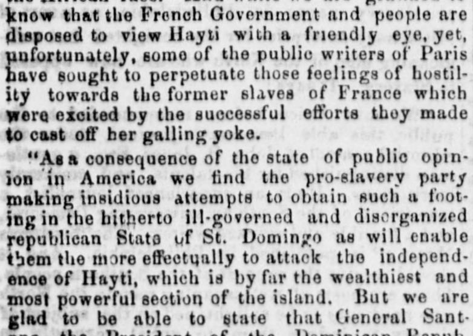

But we are glad to" be able to state that GeneralPero nos complace poder afirmar que el general
Anti-Slavery Bugle. New-Lisbon, Ohio, July 11, 1857. Page 1. View the originalVer el original

According to the Anti-Slavery Bugle, General Santana, the President of the Dominican Republic, was removed from office amid general satisfaction due to his promotion of American intrigues aimed at threatening Hayti's independence. His successor is M. Buenaventura Baez, a patriotic statesman previously banished by Santana, whose inauguration was met with public rejoicings and celebrations involving the Archbishop, the ex-President, and the Consuls of Spain, England, and France. Additionally, the excerpt notes that the Journal des Débats misrepresented the condition of Hayti, prompting a rebuke from the Haytian Minister at Court, Baron Camier.A estar del Anti-Slavery Bugle, el general Santana, presidente de la República Dominicana, fue depuesto del mando entre el beneplácito general a causa de su complacencia con maquinaciones norteamericanas que amenazaban la independencia de Haití. Le sucedió Buenaventura Báez, estadista patriota desterrado antaño por Santana, cuya investidura se celebró con festejos populares en presencia del arzobispo, del expresidente y de los cónsules de España, Inglaterra y Francia. La pieza reseña asimismo que el Journal des Débats desfiguró el estado de Haití, concitando la réplica del ministro haitiano en la corte, barón Camier.
FULL TEXT:TEXTO COMPLETO:
the African race. And while we are gratified to know that the French Government and people are disposed to view Hayti with a friendly eye, yet, unfortunately, some of the public writers of Paris have sought to perpetuate those feelings of hostility towards the former slaves of France which were excited by the successful efforts they made to cast off her galling yoke.la raza africana. Y mientras estamos gratificados de saber que el Gobierno y pueblo franceses están dispuestos a ver a Haití con un ojo amistoso, sin embargo, desafortunadamente, algunos de los escritores públicos de París han buscado perpetuar esos sentimientos de hostilidad hacia los antiguos esclavos de Francia que fueron excitados por los esfuerzos exitosos que hicieron para sacudirse su yugo irritante.
“As a consequence of the state of public opinion in America we find the pro-slavery party making insidious attempts to obtain such a footing in the hitherto ill-governed and disorganized republican State of St. Domingo as will enable them the more effectually to attack the independence of Hayti, which is by far the wealthiest and most powerful section of the island. But we are glad to be able to state that General Santana, the President of the Dominican Repub-«Como consecuencia del estado de la opinión pública en América encontramos al partido proesclavista haciendo intentos insidiosos para obtener tal punto de apoyo en el hasta aquí mal gobernado y desorganizado Estado republicano de Santo Domingo que les capacitará más efectivamente a atacar la independencia de Haití, que es por mucho la sección más rica y poderosa de la isla. Pero estamos contentos de poder declarar que el General Santana, el Presidente de la República Dominicana-